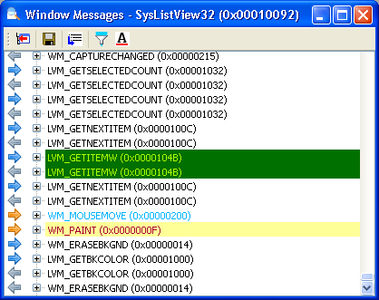

You can monitor messages sent to a window by right clicking on
that window in the tree and selecting "Messages...".
A window will open displaying any further messages that the selected
window receives. You can view the message names (as defined by Windows)
as well as their parameters (wParam and lParam) and return result.

An example of the Messages dialog.
Filtering Messages
Often you will be looking for specific messages sent to the window. For this case, Window Detective can exclude messages that you are not interested in, so you can focus on the ones you are interested in. Clicking the filter button will open the "Filter/Highlight Messages" dialog on the filter tab. Here you can select which messages to include or exclude.
Highlighting Messages
In addition to filtering messages, you can also highlight messages in
the list. The foreground (text) colour and the background colour can be
changed for specific messages, so that you can easily identify them in the
list. Clicking the highlight button  will open the "Filter/Highlight Messages" dialog on the highlight tab. Here
you can add or remove highlights, select which type of message they are applied to,
and choose the highlight colours.
will open the "Filter/Highlight Messages" dialog on the highlight tab. Here
you can add or remove highlights, select which type of message they are applied to,
and choose the highlight colours.
In the example below, highlights for three types of messages have been added: WM_PAINT, WM_MOUSEMOVE and LVM_GETITEMW (a ListView message).

The Filter/Highlight dialog, showing a number of highlights. |

An example of the highlights applied to the messages. |
Note: Filters and highlights are only applied to messages that are recieved after those filters or highlights are set.